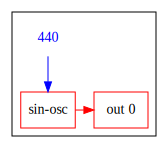
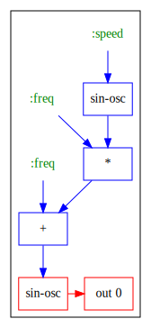

Emacs Lesson 1
Table of Contents
1 Lesson 1
1.1 Keybindings Cheatsheet
| Getting out | ||
|---|---|---|
| C-x C-c | Exit emacs | save-buffers-kill-terminal |
| C-g | Cancel running or partially typed command | keyboard-quit |
| q | Close window (in read only buffers) | quit-window |
| Working with files | ||
| C-x C-f | find (open) file | find-file |
| C-x k | kill (close) buffer | kill-buffer |
| C-x C-s | Save | save-buffer |
| C-x s | Save All | save-some-buffers |
| Working with windows | ||
| C-x 0 | Minimize window | delete-window |
| C-x 1 | Maximize window | delete-other-window |
| C-x 2 | Split window horizontally | split-window-below |
| C-x 3 | Split window vertically | |
| C-x o | Go to other window | other-window |
| C-x b | Switch to specific buffer | ido-switch-buffer |
| C-x C-b | List all buffers | list-buffers |
| S-<arrows> | Move around multiple windows | |
| Getting help | ||
| C-h k | Describe key | describe-key |
| C-h f | Describe function/command | describe-function |
| C-h t | Open tutorial | help-with-tutorial |
| C-h K | Show manual for key command | Info-goto-emacs-key-command-node |
| C-h m | Describe current major and minor modes | |
| Copy paste | ||
| C-SPC | "start selecting text" | set-mark-command |
| C-w | "Cut" | kill-region |
| M-w | "Copy" | kill-ring-save |
| C-y | "Paste" (yank) | yank |
| "Paste previous ones" (cycle) | yank-pop | |
| C-k | "Cut till end of line" (repeat to kill mutliple lines) | kill-line |
| Working with Lisps | ||
| C-x C-e | Evaluate previous expression | eval-last-sexp |
| C-M-x | Evaluate outer expression | |
| Clojure | ||
| C-c M-j | Start a REPL in the current project | cider-jack-in |
| C-c M-n | Switch to current namespace | cider-repl-set-ns |
| C-c M-c | Connect to a REPL already running in a terminal | cider-connect |
| Stop the REPL | cider-quit |
1.2 Theory
1.2.1 Emacs
- Function, Commands, Key bindings
Emacs is essentially a virtual machine that runs Lisp code. The editor functionality is written in Lisp, and other "apps" can be created that run on the Emacs platform. (Try
M-x tetrisorM-x doctor). This is why Emacs is praised for its extensibility, you can program the editor itself from within the editor.To do so you define functions. Functions that are meant to be executed by the user are called commands, they have to have
(interaction)as the first expression within the function body.You can try this in the scratch buffer that Emacs starts with.
(defun go-down-five-lines () (interactive) (forward-line 5))Put your cursor after the last closing parantheses and type
C-x C-e. Now you've executed the function definition, meaning the function (command) is now defined. You can execute it withM-x go-down-five-lines.To be more useful we can bind it to a key.
(global-set-key (kbd "<f9>") 'go-down-five-lines)
Is this case we set a global key binding, so we can use the key to invoke the command from anywhere in Emacs. Some bindings are specific to a certain context, some commands might only be active when editing Lisp files, or Ruby files, or when viewing the contents of directories.
- Help
Emacs has various help systems built-in, you should be able to learn everything about Emacs from within Emacs. All these help commands are bound to key combinations starting with
C-h, for example,C-h fwill prompt for a function. You can find out what it does, and what key, if any, it is bound to. Other notable help commands areC-h ? List all help commands help-for-help C-h k Describe key describe-key C-h K Show manual for key Info-goto-emacs-key-command-node C-h i Open the Emacs manual info C-h t Open the (pretty old school) tutorial help-with-tutorial Exercises
- What does the command
zap-to-chardo? - What key is it bound to?
- Try using it
- What command is bound to the key
M-SPC? (meta-space) - What does it do?
- Jump to its description in the manual.
- Try using it
- In the cheat sheet at the top some keybindings or command names are missing, look them and fill them in
- What does the command
2 Lesson 2
2.1 UGens
UGens or "Unit Generators" are building blocks for synths and sound processing. You can think of them as little boxes with inputs and outputs. By calling the function you create one such box. To plug a virtual cable from one block to another, you pass the first as argument to the second.
2.1.1 Selection of Ugens: Overview
| Source - Oscillators | Arguments | |
|---|---|---|
| sin-osc | Sine wave | frequency |
| saw | Sawtooth wave | frequency |
| square | Square wave | frequency |
| triangle | Triangle wave | frequency |
| Source - Other | ||
| mouse-x | Uses mouse position as signal | low-value, high-value |
| mouse-y | Uses mouse position as signal | low-value, high-value |
| Transformers | ||
| + | add signals together | signals or numbers |
| * | Make louder by certain ratio | signals or numbers |
| / | Make more quiet by certain ratio | signals or numbers |
| mix | mixes signals together, like + but averages the volume | signals or numbers |
| midicp | Convert from midi note number to frequency | note number |
| round | Round up/down to nearest multiple | multiple to round to |
| Sinks | ||
| out | output signal to a bus, 0 is the sound card | bus, signal |
2.1.2 A simple synth
The simplest synth we can make is one that sends a sine wave to the output. The sine wave generator has one input, which determines its frequency. For now we'll let it output a fixed frequency, so we pass it a number.
The output of sin-osc we pass to out, it's as if we've plugged a virtual cable
from one to the other.
Now that the circuitry is all connected we need to be able to start it. We wrap it in
a call to synth. Think of synth as a box with a button. When we press the button,
the synth starts to play. In other words, the return value of synth is a
function. When we invoke that function, the synth starts to play.
(def my-first-synth (synth (out 0 (sin-osc 440)))) ;; now start it (my-first-synth) ;; and stop it again (kill my-first-synth) ;; you can also use (stop), which stops all running synths

The red blocks and arrows deal with audio signals, the blue ones are control signals. We'll have more to say about those later on.
2.1.3 Synths and instruments
Now that we've made it this far, we'll refactor our synth in two easy steps. Instead of
creating the synth, and then binding it to a variable with def, we can do both in one
go with overtone's defsynth macro
(defsynth my-first-synth [] (out 0 (sin-osc 440)))
A synth that plays sounds directly to the audio output is called an instrument, and we
can define it using definst.
(definst my-first-synth [] (sin-osc 440))
This code is equivalent to the above, but concise and expressive. It's not much of an
instrument however, it only plays a single tone! Let's fix that. defsynth and
definst allow us to define arguments, so instead of hard coding the 440Hz, we can
pass that in from the outside.
(definst my-first-synth [frequency 440] ; single argument, frequency, with a default of 440 (sin-osc frequency)) ;; All of these are now equivalent (my-first-synth) ; Use the default, 440 (my-first-synth 440) ; Use a positional argument: the first argument is the frequency (my-first-synth :freq 440) ; Use a keyword argument ;; Now we can play different tones (my-first-synth 587) (my-first-synth 880)
2.1.4 A modulated synth
So far we've used numbers for the frequency, but we can also use a control signal to vary the frequency (i.e. height) of the tone.
(defsynth wobble [freq 440 speed 1] (sin-osc (+ freq (* freq (sin-osc speed)))))

Basic oscillators like sin-osc generate a signal that goes up and down between 0
and 1. When we multiply this signal with 440, and add 440, we get a signal that goes
up and down between 440 and 880. We feed this into the "frequency" input of the second
sin-osc, so that it's tone goes up and down.
A little piece of travia, we have "modulated the frequency", so this could be called frequency modulation, or FM. By modulating the amplitute (the loudness), we would get AM. In FM and AM radio the frequency or amplitude of a carrier wave is modulated to transfer a signal,
Notice how we used * and + to shift the range of a signal, in this case from 0->1 to 440->880. This is a common pattern, so overtone provides the mul-add ugen. Let's refactor our synth.
(defsynth wobble [freq 440 speed 1] (sin-osc (mul-add (sin-osc speed) freq freq)))
Try wobble with a couple different parameters.
(wobble :freq 300 :speed 3) (wobble :freq 250 :speed 5)
The parameters of a running synth can be manipulated with ctl
(ctl wobble :speed 10)
2.1.5 Local variables with let blocks
So far our synths are still pretty simple, hopefully they will soon become more
interesting. To not get lost in a maze of parentheses, we can use perform intermediate
steps using a let block.
let is a Clojure construct, it takes a list of name-expression pairs, and one or
more code expressions. The expressions in the list are evaluated, and the results are
made available to the following code by the given names.
An example should proof to be illuminating:
(let [x 3
y 9]
(+ x y))
;; => 12
We provided a value for x, 3, and one for y, 9, then used x and y to calculate
their sum.
We can give any number of names, and we can use names that were previously defined to derive new values. We can put several code expressions after the definitions. They will be executed one by one (presumably for side effects). The return value of the last expression is the return value of the let block.
(let [x 7
y 9
x_and_y (+ x y)] ; derived x_and_y from x and y
(println x_and_y)
(* 3 x_and_y))
(definst mouse-vibes-1 []
(let [note-number (mouse-x 55 75)
note-number-rounded (round note-number 2)
frequency (midicps note-number-rounded)]
(sin-osc frequency)))
Homework:
- Try to figure out what's going on with mouse-vibes-1
- Combine the UGens you know so far to create your own synths
- Try the examples in overtone, escpecially the "composition" ones
git clone https://github.com/overtone/overtone
The examples are under src/overtone/examples/compositions/. Open the file in emacs,
then do M-x cider-eval-buffer. Try to change things, see what happens. Remember to
just do (stop) in case of emergency :)
Tip: Type C-c C-d when your cursor is on a function name to see the documentation.